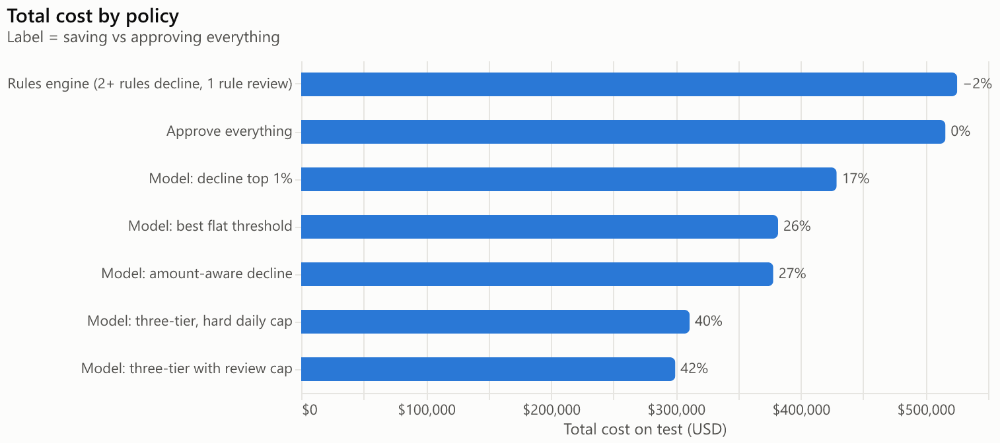
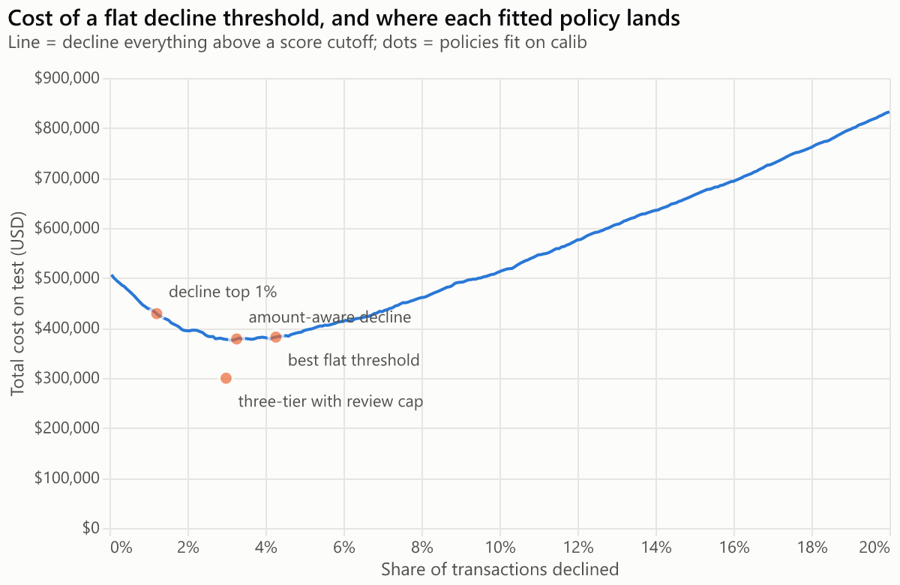
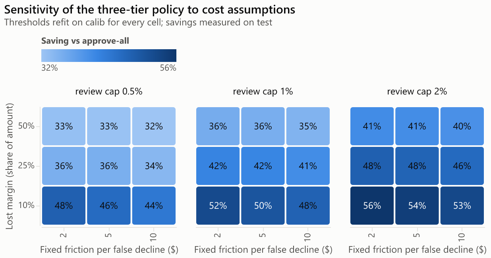
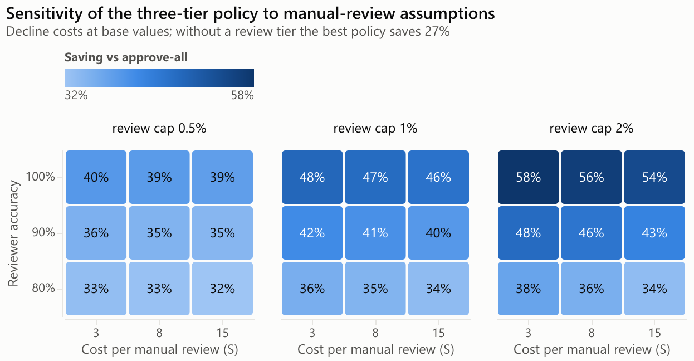
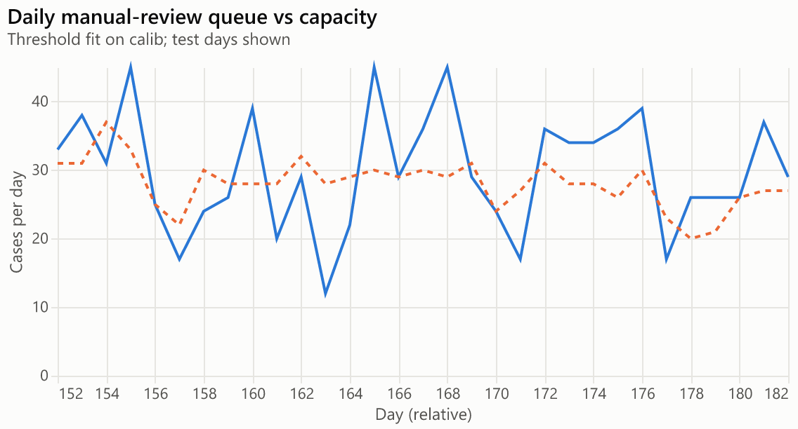

Champion model: lgbm_tuned. All thresholds fit on the calibration window, results on test.
Costs: chargeback fee $15, friction $5 + 25% of the amount per false decline, review $3, reviewers right 90% of the time, review capacity 1.0% of daily volume. Reviewed cases count their expected reviewer mistakes (approved fraud, declined good customers), so fraud $ and declined-customer counts on rows with reviews are expected values.
| Policy | Fraud $ stopped | Fraud $ missed | Good customers declined | False-decline rate | Reviews | Total cost | Saving vs approve-all | Saving 95% CI | Saving vs top-1% |
|---|---|---|---|---|---|---|---|---|---|
| Approve everything | $0 | $469,609 | 0 | 0.00% | 0 | $515,854 | 0.0% | | -20.3% |
| Rules engine (2+ rules decline, 1 rule review) | $3,097 | $466,511 | 226 | 0.26% | 2,320 | $525,286 | -1.8% | -4.0% to -0.4% | -22.5% |
| Model: decline top 1% | $78,901 | $390,707 | 163 | 0.19% | 0 | $428,738 | 16.9% | 13.5% to 20.7% | 0.0% |
| Model: best flat threshold | $218,043 | $251,565 | 2,099 | 2.46% | 0 | $381,818 | 26.0% | 20.3% to 31.2% | 10.9% |
| Model: amount-aware decline | $183,162 | $286,447 | 1,369 | 1.60% | 0 | $378,057 | 26.7% | 22.0% to 31.4% | 11.8% |
| Model: three-tier with review cap | $248,274 | $221,335 | 1,277 | 1.49% | 926 | $299,562 | 41.9% | 37.7% to 46.0% | 30.1% |
| Model: three-tier, hard daily cap | $239,609 | $230,000 | 1,294 | 1.51% | 798 | $311,068 | 39.7% | 35.2% to 44.2% | 27.4% |
**Three-tier policy driven by each model**
| Model | Total cost | Saving vs approve-all | Fraud $ recall | False-decline rate | Review rate |
|---|---|---|---|---|---|
| LightGBM (Optuna-tuned) | $299,562 | 41.9% | 52.9% | 1.49% | 1.05% |
| LightGBM | $300,386 | 41.8% | 52.3% | 1.60% | 1.09% |
| Ablation: no velocity/history/freq | $301,884 | 41.5% | 55.2% | 2.14% | 1.11% |
| Ablation: raw text strings | $304,407 | 41.0% | 50.7% | 1.38% | 1.06% |
| LightGBM (scale_pos_weight) | $312,106 | 39.5% | 47.9% | 1.23% | 1.05% |
| LightGBM (cost-weighted) | $331,156 | 35.8% | 41.6% | 1.33% | 1.06% |
| Ablation: interpretable features only | $388,265 | 24.7% | 37.2% | 1.96% | 1.21% |
| Logistic regression | $497,121 | 3.6% | 20.7% | 2.39% | 1.09% |
| Rules engine | $518,214 | -0.5% | 9.5% | 0.10% | 1.03% |
**Break-even decline probability by amount**
| amount | decline if p > |
|---|---|
| $5 | 0.238 |
| $25 | 0.220 |
| $100 | 0.207 |
| $500 | 0.202 |
| $2,000 | 0.200 |
**Review queue (three-tier, test window):** mean 1.04% of daily volume, max 1.53%; 16 of 31 days above capacity (128 overflow cases). With the hard daily cap (first come, first served; overflow auto-decided) days over capacity: 0.
**Perfect-reviewer bound:** with reviewers always right the three-tier saving would be 48.3% (vs approve-all), against the 90%-accuracy result above.
Thresholds fit on calib: {"top_1pct_threshold": 0.62083, "cost_optimal_flat_threshold": 0.10352, "review_benefit_threshold": 35.56251, "rules_review_amount_bar": 0.0}




